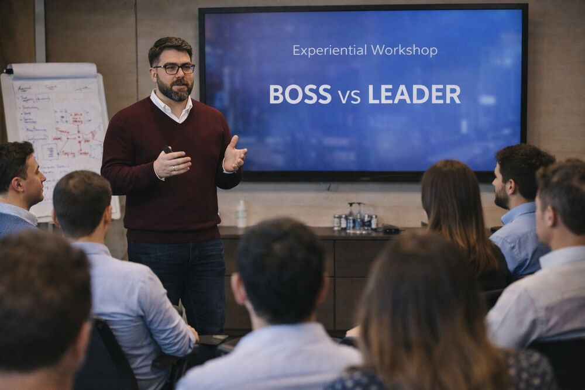

01 — Leadership
Leadership Experience Design
We design leadership experiences that transform how leaders think, decide, and lead.
- Custom leadership programs
- Experiential workshops & offsites
- Leadership journeys (3–6 months)
- 360° feedback & assessment integration